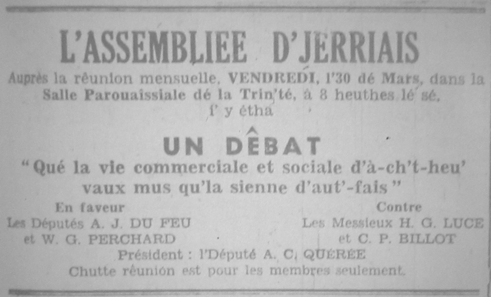

L'Assembliée d'Jèrriais
Qué la vie commerciale et sociale d'à ch't heu' vaux mus qu'la sienne d'aut'fais

Rêunion mensuelle du mais d'mars
Au mains 120 membres lus rêunîtent pour la rêunion mensuelle, vendrédi, l'30 dé mars, dans la Salle Parouaîssiale dé la Trin'té. Lé rapport dé la rêunion du mais d'fêvri fut liu et accepté, dex nouvieaux membres fudrent êlus et, auprès, deux lettres qu'avaient 'té env'yées à deux membres malade futent liues.

L'Dêbat
Lé Député A. C. Quérée fut président pour lé dêbat, et c'menchi par introduithe les quatre mêssieux qui lus montrîdent dé raide bouans dêbateurs. Lé sujet 'tait "Qué la vie commerciale et sociale d'à ch't heu' vaux mus qu'la sienne d'aut'fais".
Lé proposant d'la motion, l'Député A. J. du Feu, dit qué les c'modités d'à ch't heu' 'taient la cause dé la vie sociale d'anniet. Sans l'transport qui y a nou n'éthait pon d'Assembliée d'Jèrriais ni d'Guèrnésiais. I'y avait la télévision et toutes sortes dé machin'nies pour sauver l'travas, qui 'tait si du l'temps passé. Lé Député nos racontit comment qué i'y a eune quarantaine d'années, bein des gens marchaient en ville pour m'ner lus vaques au baté quand i' 'taient vendues pour Améthique, mais anniet i' sont portées jusqu'à l'aérodrome pour aller à lus destination par avion. Lé proposant fit tout ch'qu'i' put pour convaicre les gens qué la motion 'tait correcte.
L'or
L'opposition fut proposée par Moussieu H.G. Luce, êcrivain, et i'nos racontit comment qu'nos anchétres faithaient des batieaux, des vannes, et harnées, lus habits, lus bottes et soulliérs, ouvraient des cauches et corsets d'śuvres. I' travaillaient si du qué l's hommes fûdrent arrêtés d'ouvrer, pour garder l'commerce. I'y avait bein pus d'commerce fait par les Jèrriais dans chu temps là; ch'tait des noms Jèrriais qué nou' viyait et ouiyait partout. Eune chose bein importante 'tait qué les gens 'taient payés auve dé l'or, pas du papyi comme à ch't heu', et pis l'or avait d'la valeur qui n'sé perdait pas; les vièrs lé savaient bein, et sauvaient lus or.
La vie sociale 'tait millieuthe étout: les gens 'taient "Contents commes des Pînchons", et travaillez tous ensemblye sus touos sens, sus les fermes a touanner, au fain, à l'avou. Moussieu Luce amusit l'audience hardi quand i' dit qué les gens s'entre prêtaient même des poules pour mettre à couer; i' s'entre entendaient pus dans l'vièr temps!
Pour aver un bain
Lé s'gondant d'la motion, l'Député W. G. Perchard, mentionnit toutes sortes dé machin'nies pour colyer l'travas d'maiethon; les machines à laver l'linge, les vaissieaux et à netti l's apparteinments. Lé Député causit hardi d'amus'ment quand i' dit qué l's śux 'taient couées a la machine à ch't heu'! I' n'y avait qu'à mettre les śux dans eune machine et y r'garder dans trais s'maines et touos les poulets 'taient èclôs! Les poules lus trouvaient souangnis sans faithe dé travas; seul'ment pouser des boutons 'chîn et là! Les membres 'taient paumés d'rithe dé l'ouï raconter la maniethe que les vièrs lus prennaient pour aver un bain par cauffer l'"coppeur" et faithe servi un traie dans la lav'thie. I'n y avait, sans doute, pas d'salle dé bains dans les maiethons!
Lé Sieur Perchard donnit bein des détails parmi la manniéthe moderne dé fermer, car avec toutes les nouvelles machines sus l'marchi lé travas est pus facile, bein pus vite et mus fait! Un exemplye mettre lé fain en "balles" à la pliaiche d'l'fagotter.
Lé s'gondant d'l'opposition, l'Sieur C. P. Billot, ex-Président d'L'Assembliée, dit qu'les gens avaient vétchu bein heutheux l'temps passé quand i' n'y avait pon tant d'prêsse et d'vitese. Lé monde 'taient pus libre, et n'taient pon forchis d'payer des taxes et d's asseuthances pour ieux-mêmes et lus travailleurs. Lé commerce 'tait bein pus seux; dêjà les fermiers, en vendant lus patates au " 'Bridge", savaient tchi prix qu'il' en avaient ieu, et pouvaient même erchever lus sous en lus en allent siez ieux. À ch't heu', sus commision, ch'n'est pas d'même; faut arrêter longtemps souos l'espéthance qu'il' éthons tchiqu' sou à v'nîn pus tard! Les travaux d'ferme 'taient bein fais avec les ch'vaux, et pis les ch'vaux, nou' pouvait s'fier d'sus, pas comme des machines qui pettonnaient mais n'bouogaient pon!
Des bouans fricots
La vie sociale 'taite bein millieuthe étout. Les gens avaient des bouans fricots ès jours dé bat'tie, et i'y avait ein du pliaisi à aller au lanchon et tailli du vraic.
Ch'est seux qué l'sujet avait 'té bein dêbaté, serieus'ment aussi bein comme risiblyément, et auprès qué plusieurs membres dé l'audience eutent donné lus idées, lé Député Quérée d'mandit ès gens d'voter en faveur ou contre, mais les deux cotés 'taient si bouans qu'i' n'y avait qué trais vouaix d'difféthence. Eune chose à s'ramémouaither est qué les dêbateurs n'taient pon nécessaith'ment d'acord avec chein qu'i' dithaient duthant l'dêbat.
Ermerciements et anonces
Lé Député Quérée ermercyit touos les mêssieux pour aver fait un tel succès d'la séthée, et dit q'i' y'éthait eune tassée d'thée pour tous qui voulaient rester.
21/4/1962
Viyiz étout: